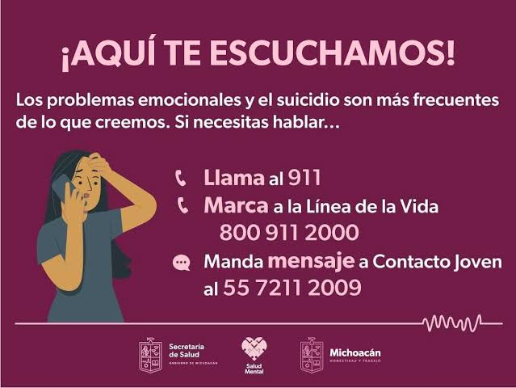
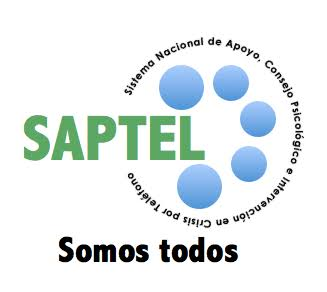

Es el canal nacional principal de atención psicológica y emocional gratuita y confidencial.
Visitar Línea de la VidaBrinda primeros auxilios psicológicos, contención emocional y orientación ante situaciones de riesgo o violencia digital.
Ir a Consejo Ciudadano
Es un servicio de atención psicológica a distancia operado por especialistas.
Abrir SAPTEL